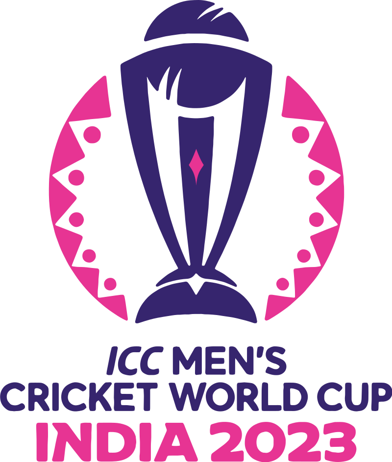

ICC Cricket World Cup 2023

The Cricket World Cup, officially known as ICC Men's Cricket World Cup, is the international championship of One Day International (ODI) cricket.
The event is organised by the sport's governing body, the International Cricket Council (ICC), every four years, with preliminary qualification rounds leading up to a finals tournament. The tournament is one of the world's most viewed sporting events and is considered the "flagship event of the international cricket calendar" by the ICC.
The first World Cup was organised in England in June 1975, with the first ODI cricket match having been played only four years earlier. However, a separate Women's Cricket World Cup had been held two years before the first men's tournament, and a tournament involving multiple international teams had been held as early as 1912 when a triangular tournament of Test matches was played between Australia, England, and South Africa.
The first three World Cups were held in England. From the 1987 tournament onwards, hosting has been shared between countries under an unofficial rotation system, with fourteen ICC members having hosted at least one match in the tournament.
The current format involves a qualification phase, which takes place over the preceding three years, to determine which teams qualify for the tournament phase. In the tournament phase, 10 teams, including the automatically qualifying host nation, compete for the title at venues within the host nation over about a month. In the 2027 edition, the format will be changed to accommodate an expanded 14-team final competition.
A total of twenty teams have competed in the twelve editions of the tournament, with ten teams competing in the recent 2019 tournament.
Australia has won the tournament five times, India and the West Indies twice each, while Pakistan, Sri Lanka, and England have won it once each.
The best performance by a non-full-member team came when Kenya made the semi-finals of the 2003 tournament.
England is the current champion after winning the 2019 World Cup edition. The next tournament will be held in India in 2023. The final two teams of the World Cup 2023 will be decided on the basis of the Qualifier tournament to be played in Zimbabwe from June 18 to July 9, 2023, and the subsequent 2027 World Cup will be held jointly in South Africa, Zimbabwe, and Namibia.